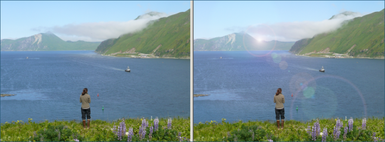

The Lens Flare effect allows you to place a sun or light spot in a photo, along with simulated lens
flare or reflections. The flare intensity, and the type of lens: normal, wide angle, or telephoto can
be specified.
You can click on the left (original) photo to set the point for the sun spot. You can click on the
right (modified) photo to pan and zoom.
